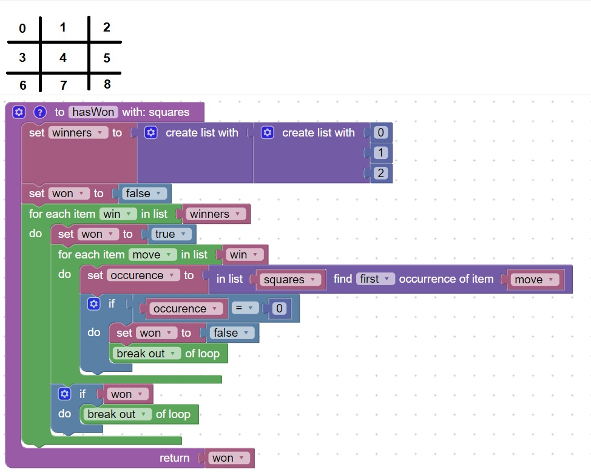

How to determine if a tic-tac-toe game is over
Assuming that the moves are numbered left-to-right, up to down, 0..8
This code will check if the list of moves that is passed in (squares) has a winning combination in it.
Currently only the first winning combination is represented by 0,1,2,
There are other winning combinations as well:
- 3,4,5
- 6,7,8
- 0,3,6
- 1,4,7
- 2,5,8
- 0,4,8
- 2,4,6

You homework is to add the other winning combinations into the winners list